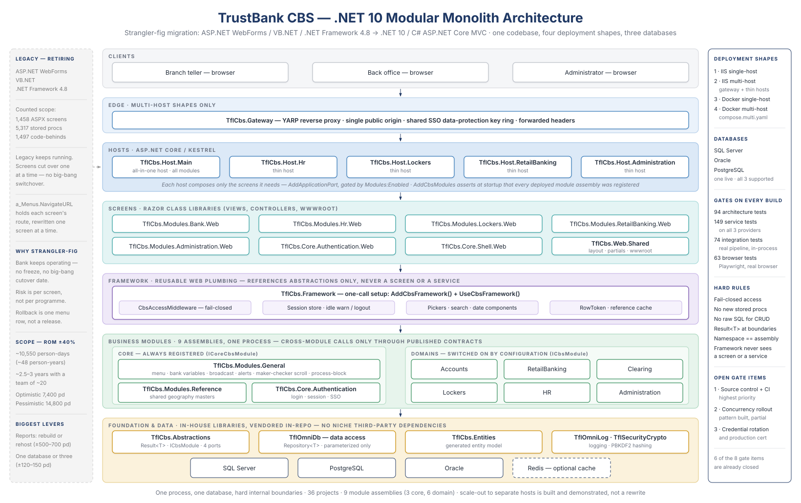

TrustBank CBS — .NET 10 Migration: Management Diagrams
Prepared 30 July 2026 · revised 21 August 2026. Every project name, count and test figure is taken from the source tree, not estimated.
1 · Architecture
Layered runtime view: clients → gateway → hosts → screen libraries → framework → business modules → foundation and data.
The left panel is the legacy estate being retired; the right panel lists the deployment shapes, databases and build-time gates.

2 · Features, Technologies & Components
What the platform does, what it is built on, and what is reusable across every screen — with the delivered-to-date position.